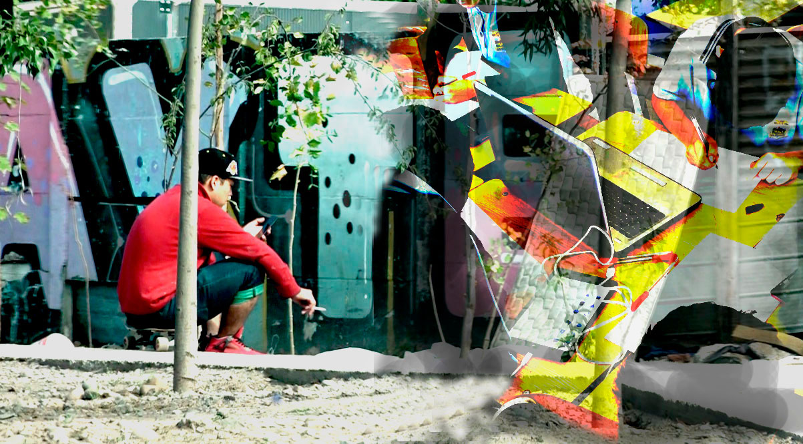

El proyecto
Villas es un webdocumental que pretende visibilizar el impacto de la cultura maker en la educación en contextos de alta segregación barrial y el dominio narco en la periferia sur del Gran Santiago de Chile. A través de la intervención con talleres en escuelas vulnerables, se introduce a niños de edades comprendidas entre los 8 y 13 años a explorar creativamente las nuevas tecnologías.
Este proyecto viene precedido por una investigación multidisciplinaria encargado por la Subsecretaría de Prevención del Delito del Gobierno de Chile y el Centro de Políticas Públicas de la Universidad del Desarrollo. Con esta finalidad, se realizó una investigación cualitativa de las dinámicas sociales que prevalecen en territorios segregados, que hoy se encuentran bajo el dominio narco y en una situación de Estado fallido.
Asimismo, se llevó a cabo un análisis espacial del territorio que cruzó una investigación cuantitativa de datos anónimos de los actores, los cuales retrata una situación alarmante: reclutamiento infantil, consumo abusivo de drogas y violencia barrial. En este contexto, Villas persigue hacer visible, por medio de una experiencia interactiva, el contraste que genera la cultura maker en las mayores víctimas de esta situación de riesgo: niños y niñas. Así, hacemos un llamado a unirse a una plataforma de financiamiento colaborativo para la intervención de las comunidades escolares que hoy funcionan como un instancia de protección.
Volver